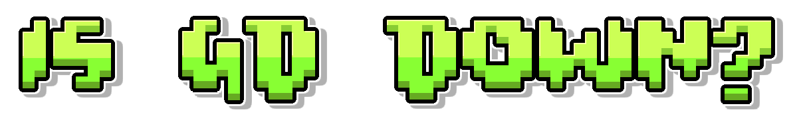

Comprobando el estado de los servidores de Geometry Dash...
Comprobando el estado de descarga del nivel...
Consultar el estado de la búsqueda de la cuenta...
Comprobando la búsqueda de nivel...
Revisando las clasificaciones...
Comprobando el estado del servidor...
Comprobando el estado del servidor...
isGDDown es una herramienta independiente para comprobar el estado
de los servidores de Geometry Dash. Utiliza su propio sistema para
verificar la disponibilidad de determinados servicios en línea y
ayuda a los jugadores a investigar problemas de conexión.
Este proyecto comunitario no está afiliado a RobTop Games.
Preguntas frecuentes
¿Cómo puedo saber si Geometry Dash no funciona?
Arriba hay varias pruebas. Si todas las pruebas indican que el juego funciona, «Geometry Dash» funciona plenamente; si entre 2 y 4 pruebas han dado resultado positivo, el juego funciona parcialmente; si ninguna de las funciones funciona, el juego no está disponible en absoluto. La lista de pruebas se encuentra más arriba.
¿Cómo comprueba isGDDown el estado del servidor?
El sitio solicita un informe de estado a su propio servidor.
Este verifica determinados servicios en línea de Geometry Dash,
incluida la conectividad con Boomlings y la disponibilidad de
la tabla de clasificación. El resultado no procede de un
sistema oficial de estado de RobTop Games.
¿Por qué no puedo conectarme a Geometry Dash?
Los problemas de conexión pueden deberse a fallos del servidor,
problemas de conexión a internet o problemas con un servicio
en línea específico. Si las comprobaciones de isGDDown son
satisfactorias, revisa tu conexión e inténtalo de nuevo más tarde.
¿Por qué aparece el error "Error al guardar"?
Un error al guardar no significa necesariamente que todos los
servidores de Geometry Dash estén inactivos. Comprueba tu
conexión y contacta con el soporte de Geometry Dash si el
problema persiste.
¿Es isGDDown el comprobador oficial del estado de RobTop?
No. isGDDown es un proyecto independiente creado por fans.
No está afiliado ni respaldado por RobTop Games.
¿Quién creó y mantiene este sitio web?
Este sitio web fue creado y es mantenido por KebabFan.
¿Cómo puedo contactar con el creador?
Puedes contactar con el creador por correo electrónico:
isgddown@zohomail.eu.
¿Puedo copiar o insertar esta página como si fuera mía?
Respeta el trabajo del creador y no copies el contenido como
si fuera tuyo. Si utilizas isGDDown, incluye un enlace al sitio original.
isGDDown comprueba determinados servicios en línea mediante su propio
sistema. Los resultados son estimaciones independientes y podrían no
reflejar el estado de todas las funciones de Geometry Dash.